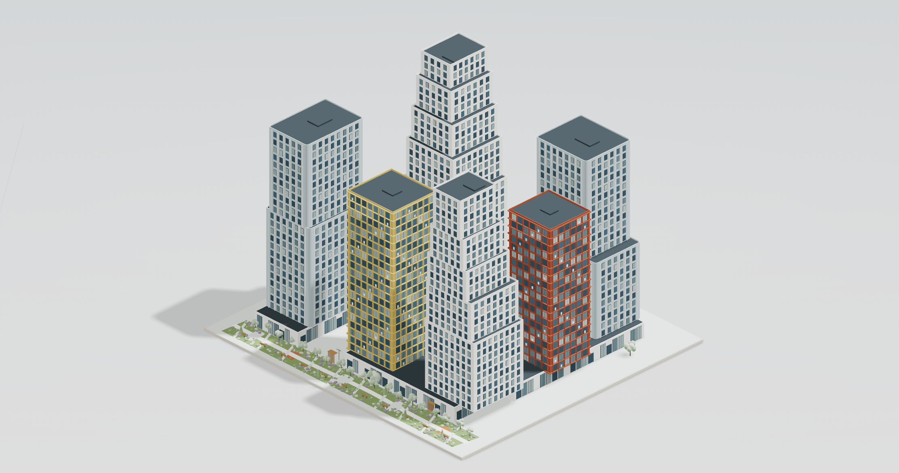
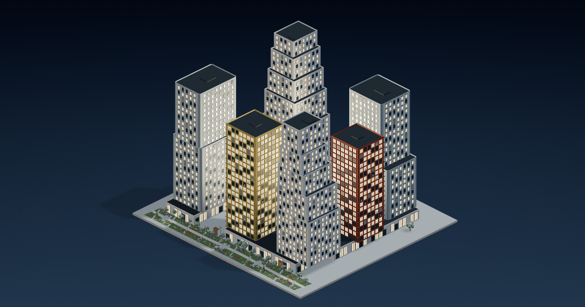
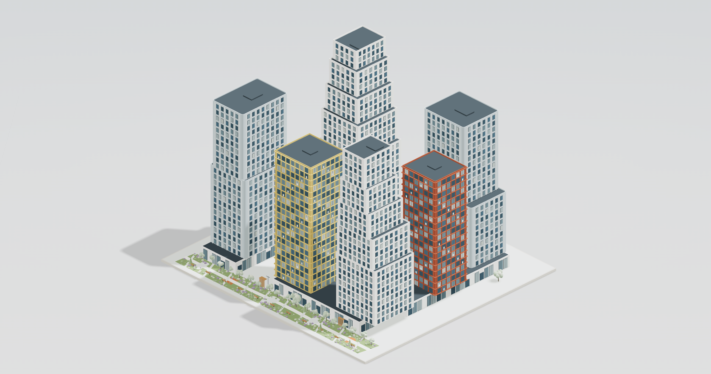
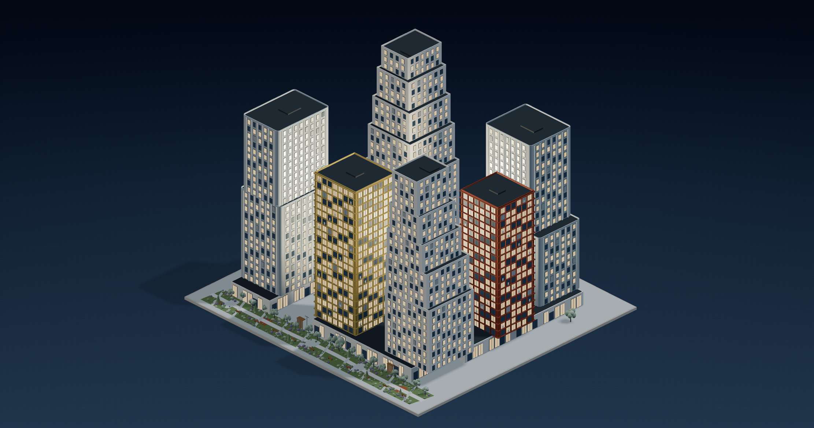
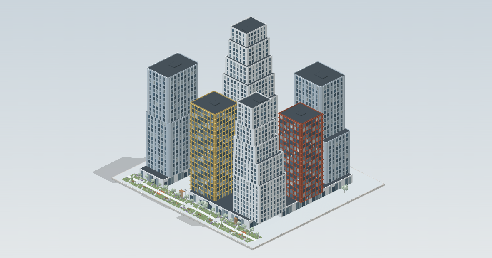
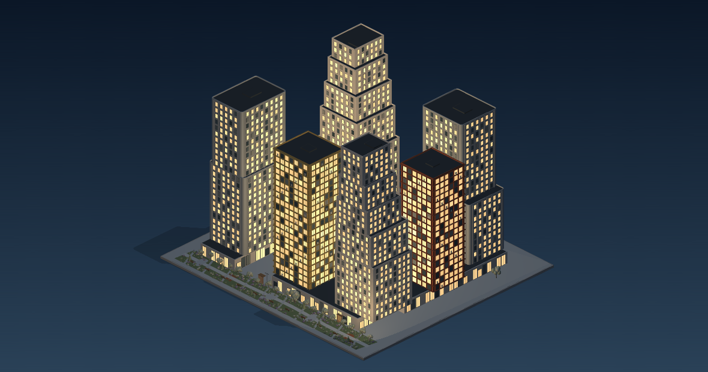

Ориентир — ваш скриншот. Все примеры ниже — настоящие браузерные рендеры, не Blender и не генеративные изображения.
Первый ряд оставлен как контрольный. Внешние шрифты в проверке отключены. Сайт не опубликован.
Three.js. Сохранён вариант «Серебро и графит» с вашего скриншота: тот же ракурс, градиент и чёткие фасады.


Three.js. Немного светлее день, более читаемые тени и спокойнее свечение ночью. Без размытия, постобработки и изменения геометрии.


Та же исходная геометрия и сопоставимая изометрическая камера. Отдельная проверка света, мягких теней и горящих окон в другом браузерном движке.


Three.js: интерактивное сравнение · Babylon.js: интерактивный пример